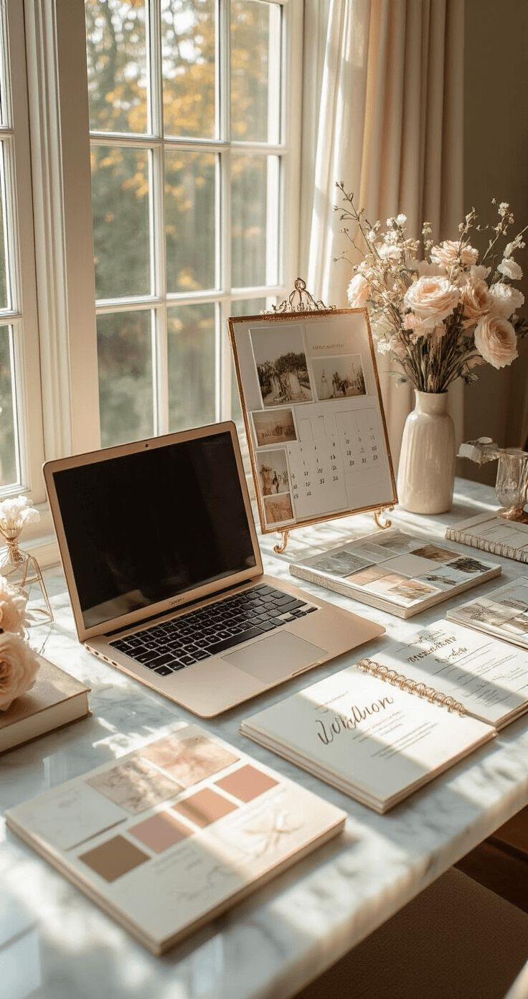

WELCOME
to my

to my
Hello! My name is Meroska Gouhar, and I am a Computer Science student at Northeastern University concentrating in Artificial Intelligence. I created this website as a way to introduce myself and share some of the things that are important to me. Technology has always been something that excites me, especially the ways it can be used to solve real-world problems and improve people's lives.
Through my coursework and projects, I have gained experience working with programming languages such as Python, Java, and R. I have also worked on projects involving data analysis, machine learning, and software development. I enjoy learning new technologies and challenging myself with complex problems that require both logical thinking and creativity.
Outside of academics, I enjoy many creative hobbies such as singing, nail art, and crocheting. I love exploring new hobbies and finding ways to express creativity through different mediums. I am also involved in volunteering as a Sunday school teacher, which allows me to give back to my community and help others learn and grow.